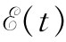

的电压，其中a端的电势比b端高。
的电压，其中a端的电势比b端高。现在要来谈谈有源 电路元件——一种电路中电流和电压的源——即发电机 。
假定有一个像电感那样的线圈，只是它的匝数很少，以致可以忽略它本身电流的磁场。然而，这一线圈被置于或许由诸如旋转磁铁所产生的变化磁场之中，如图22-5所示（以前就知道，像这样的旋转磁场也可由通有交变电流的一组适当的线圈产生）。我们必须再做出几个简化假定，这些假定全都与上面对电感情况所描述的相同。特别是，我们将假定，该变化磁场被局限在线圈附近的确定区域而不会出现在发电机外面两端点之间的空间里。
图22-5 含有一个固定线圈和一个旋转磁场的发电机
仔细地按照我们曾对电感所做的分析，考虑环绕如下一个闭合回路对E进行线积分，即从端点a开始，经过线圈到达端点b，并在两端点之间的空间里返回到起点。我们再次得出结论，两端点间的电势差等于E环绕该回路的总线积分：
V=-∮E·ds.
这个线积分等于该电路中的电动势，因而跨越发电机两端点的电势差V也就等于该线圈的匝连磁通量的变化率：
对于一部理想发电机来说，我们假定该线圈的匝连磁通量是由一些外加条件——诸如旋转磁场的角速度——所确定的，而无论如何不受流经发电机电流的影响。这样看来，发电机——至少是我们现在所考虑的理想
发电机——并不是一个阻抗，跨越它两个端点的电势差由任意给定的电动势
所确定。这种理想发电机由图22-6所示的符号表示，小箭头代表电动势取正值时的方向，图中发电机的正电动势将产生一个V=
的电压，其中a端的电势比b端高。
图22-6 理想发电机的符号
还有另一种制造发电机的方法，虽然内部很不相同，但在两端点以外所发生的事态则与刚才所描述的无法加以区别。假设有一个金属线圈在一固定 的磁场中旋转，如图22-7所示。我们画出一个条形磁铁来表明有磁场存在；当然，它也可以由任何其他恒定磁场源、诸如一个载有恒定电流的附加线圈来代替。就像图中所示的那样，利用滑动接触或“汇电环”就可把旋转线圈同外界的连接建立起来。我们仍然对出现在a与b两端点间的电势差感兴趣，当然，它就是沿着发电机之外一条路径从端点a至端点b的电场积分。
图22-7 含有一个旋转于一固定磁场中的线圈的发电机
此刻在图22-7的系统中不存在变化着的磁场，因而我们起初也许会怀疑怎么会有任何电压出现在发电机的两端。事实上，在发电机内部的任何一处都没有电场。我们照常假定，作为理想元件，在其内部的导线是由理想的导电材料制成的，而正如我们曾经多次说过的那样，在一理想导体内部电场等于零。但那是不正确的。当导体在一磁场中运动时，它就不正确了。正确的说法是，在一理想导体内部作用于任一电荷上的合力 必须为零，否则就会有自由电荷无限大地流动。所以永远正确的是，电场E加上导体速度与磁场B的叉积——那就是作用在单位电荷上的合力——在导体内部必须为零：
F/单位电荷 =E+v×B=0（在理想导体中）， （22.12）
式中v代表导体的速度。只要导体的速度v为零，则我们以前关于理想导体内部没有电场的说法是完全正确的，不然的话，正确的说法应由式（22.12）所提供。
回到图22-7的发电机上来，我们现在明白，通过发电机的导电路径从端点a至端点b电场E的线积分必定等于在相同路线上v×B的线积分，即
可是，这仍然是正确的：即环绕一个包括该发电机外面从b至a的归途在内的那条完整的回路E的线积分仍必定为零，因为这里并不存在变化的磁场。因此，式（22.13）中的第一个积分也就等于V，即两端点间的电压。事实证明，式（22.13）右边的积分恰好就是穿过该线圈的通量匝连数的变化率，因而——根据通量法则——等于线圈中的电动势。因此，我们再度得到：跨越两端点间的电势差等于该电路中的电动势，它与式（22.11）相符。所以，无论是其内部磁场在一固定线圈附近变化着的发电机，还是其内部线圈在一固定磁场中运动的发电机，它们的外部性质都相同。有一个电势差跨越两端点之间，它与电路中的电流无关而仅仅取决于该发电机内部一些任意给定的条件。
只要我们试图从麦克斯韦方程组的观点来理解发电机的作用，我们也许会问及像手电筒电池那样的普通化学电池。这也是一种发电机，即是一个电压源，尽管它只出现在直流电路中。原理最简单的一种电池如图22-8所示。我们设想有两块浸没在某一种化学溶液中的金属板。假定该溶液含有正的和负的离子。也假定其中一种离子（如负离子）比那带有异号电荷的离子要重得多，以致它依靠扩散过程而通过溶液的运动慢得多。其次，我们还假定，用种种方法来安排使得溶液浓度从液体的一部分变化至另一部分，以致两种符号的离子在比方说下板附近的数目要远大于在上板附近。由于正离子的迁移率较大，它们便将更快地漂移到浓度较低的那一个区域里，使得有稍微超额的正离子到达上板。于是上板就将带有正电而下板则有一净负电荷。
图22-8 化学电池
当有越来越多的电荷扩散至上板时，这一块板的电势就将升高至这样一种程度，即在两板间所引起的电场对离子所施之力恰好抵偿其超额迁移率，因而电池中的两极板就迅速达到一个标志其内部结构性能的电势差。
正如上面对于一理想电容器所论证的那样，我们见到，当不再有任何离子扩散时，a和b两端点间的电势差恰好等于两极板间的电场的线积分。当然，电容器与这样一个化学电池之间是有本质差别的。倘若把电容器的两端短路一会儿，电容器将会放电而不再有任何电势差跨越两端点之间。而在化学电池的情况下，电流却可以继续从端点引出而不致在电动势上有任何改变——当然一直到电池内的化学药品耗尽时为止。在一个实际电池中，会发现跨越端点的电势差随着从电池所引出的电流增大而降低。然而，在保持已做出的那种抽象化情况下，我们可以设想一个理想电池，跨越于端点间的电压与电流无关。这样，一个实际电池便可视作一个串联着一个电阻的理想电池。